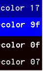

Sets the default console foreground and background colours.
Syntax
COLOR [background][foreground]
Colour attributes are specified by 2 of the following hex digits. Each digit can be
any of the following values:
0 = Black
8 = Gray
1 = Blue
9 = Light Blue
2 = Green
A = Light Green
3 = Aqua
B = Light Aqua
4 = Red
C = Light Red
5 = Purple
D = Light Purple
6 = Yellow
E = Light Yellow
7 = White
F = Bright White
If no argument is given, COLOR restores the colour to what it was when CMD.EXE
started.
Colour values are assigned in the following order:
The DefaultColor registry value.
The CMD /T command line switch
The current colour settings when cmd was launched
The COLOR command sets ERRORLEVEL to 1 if an attempt is made to execute the
COLOR command with a foreground and background colour that are the same.
Examples:

COLOR 07, white on black is the default.
"COLOR 00" is an invalid option and will set %ERRORLEVEL% to 1
The COLOR command will change the color of all the text in the window.
COLOR is an internal command.
“How much more black could this be?" and the answer is "None...none more black” ~ Spinal Tap
Related:
CMD - Start a new CMD shell
EXIT - Set a specific errorlevel
PowerShell: Write-Host - Write output to the screen (colour can be set for individual strings).
Colour codes - HTML/CSS
Aaron Margosis - Change prompt colors for all Admin level prompts
Color Scheme Designer - Design colour themes
Equivalent bash command (Linux): dircolors - Colour setup for `ls'